In this homework, we implemented a simple rasterizer capable of drawing triangles, supersampling for antialiasing, applying hierarchical transforms, and performing texture mapping with antialiasing. By working through this assignment together, we learned about the intricacies of vector graphics rendering, particularly how to manage and manipulate pixels and coordinates to achieve precise outputs on the GUI. The challenges of implementing Task 2 (supersampling), which could only be done with a proper understanding of the downsampling relationship between the sample buffer and frame buffer, helped further my understanding of how graphics are rendered at a low level, making this a great learning experience.
The process of "rasterization" is essentially flattening a triangle (2D geometric shape) into a 1D vector of framebuffer pixel values.
We first assessed the 3 vertices of our triangle, and computed a "bounding box" by computing the minX, minY, maxX, and maxY.
From there, we iterate over all the pixels within the bounding box, and for each (x,y) coordinates, we perform a point-in-triangle test from lecture.
If the coord is inside OR on (made our check >= to account for this edge case) the triangle, we fill the framebuffer with the corresponding color.
Our algorithm is no worse than one that checks each sample within the bounding box of the triangle because that is essentially the time complexity of our algorithm, but we did make one main optimization.
To ensure that we always stay within image bounds, we have additional checks on minX, minY, maxX, and maxY after they are assigned in order to floor/ceil their values if they're out of bounds.
This optimization works because if we find that a coordinate is out of bounds, we don't even need to check it since it definitely won't be in the triangle (and thus not colored), we can simply move on to the next coordinate.
|
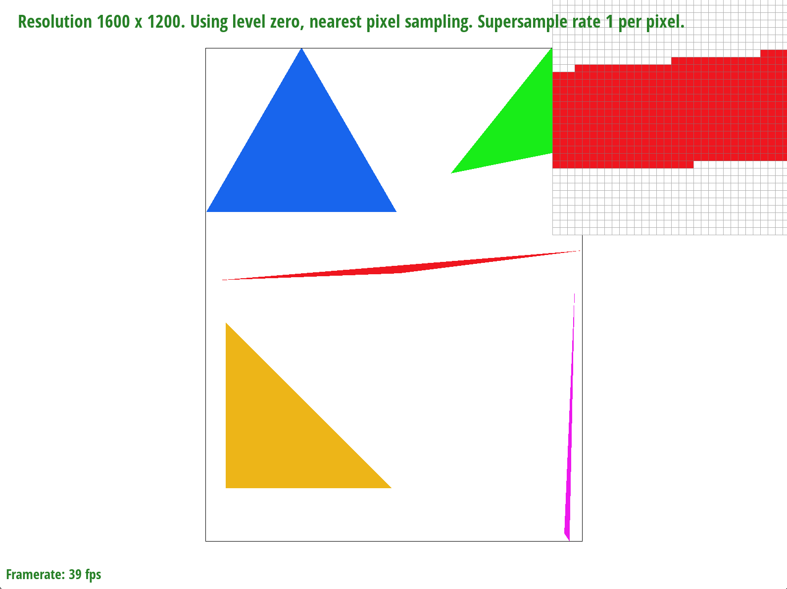
|
|
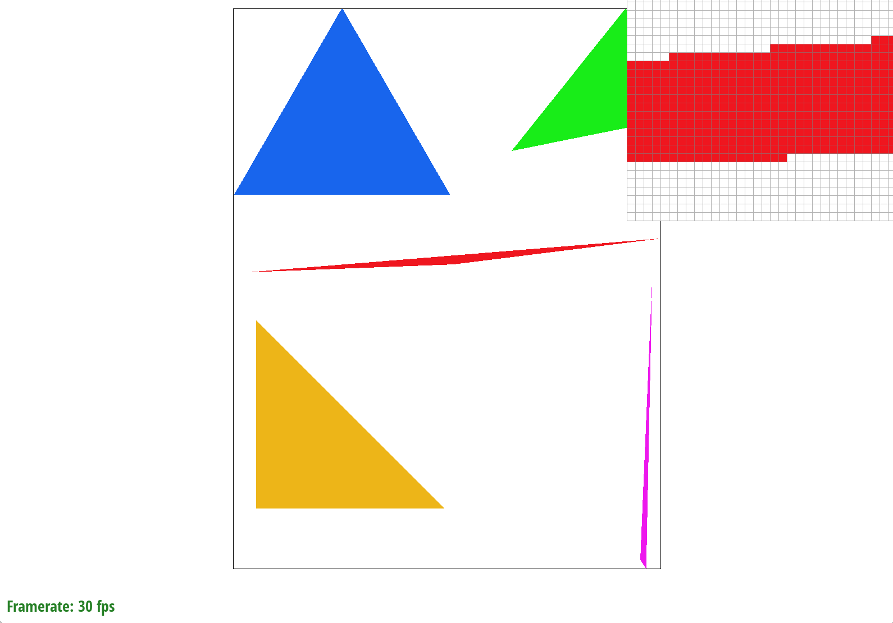
|
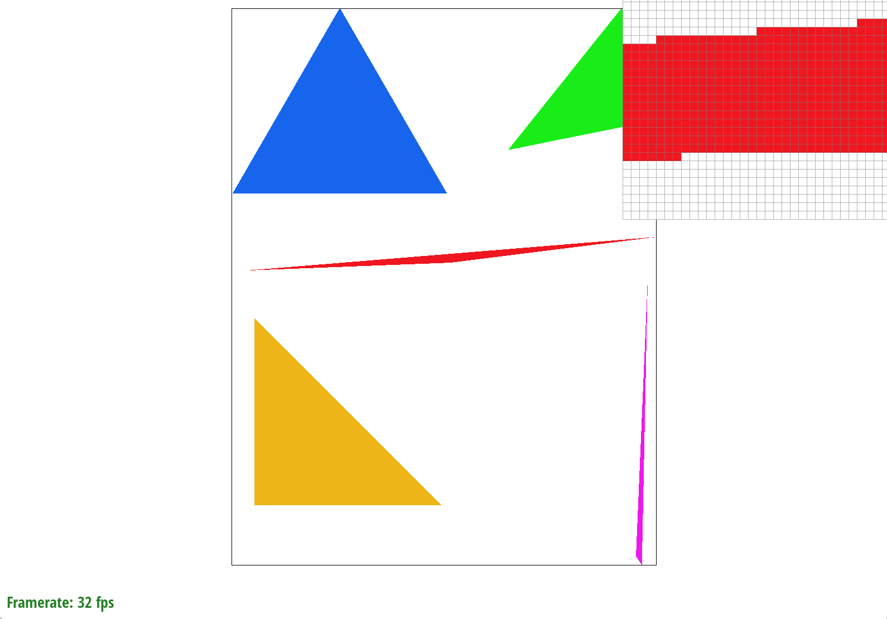
|
|
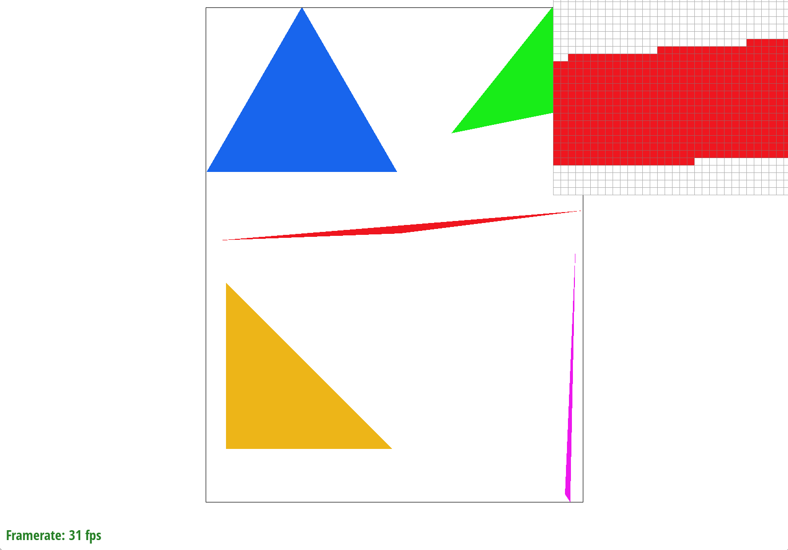
|
|
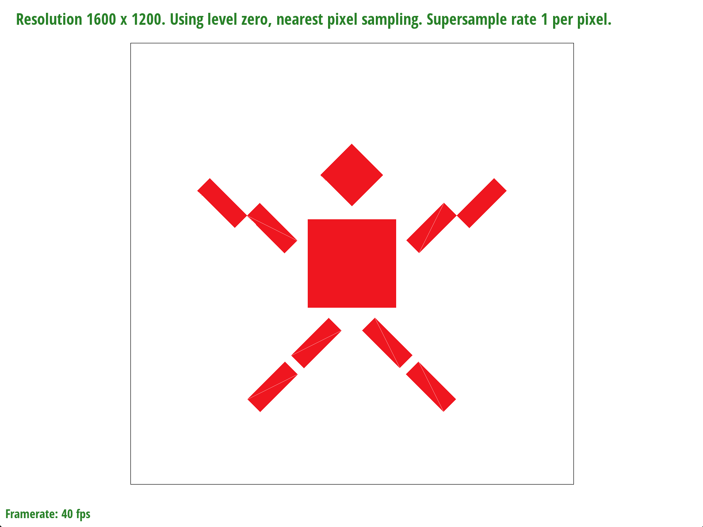
|
svg/basic/test7.svg
Pixel sampling enables sampling using different numbers of surface points surrounding a texture coordinate. In nearest pixel sampling, we choose the one surface coordinate closest to the texture coordinate and use that color as the texture for the texture coordinate. In bilinear pixel sampling, we linearly interpolate, or take the weighted average, of the four surface coordinates surrounding the texture coordinate, using the resulting linear interpolation as the texture of the texture coordinate.
In calculating the pixel sampling, we used Barycentric coordinates (from task 4) to get the relevant texture coordinate (u, v). If the alpha, beta, and gamma parameters were greater than or equal to 0, the point was in the triangle; then, according to the psm, we implemented either nearest-pixel or bilinear sampling. For nearest-pixel sampling, we rounded the (u, v) coordinate and found the texel at (u, v). For bilinear pixel sampling, we found the four nearest surface coordinates and found the linear interpolations between adjacent coordinates' colors, then the linear interpolation between the resulting values to get the final color for the texture coordinate.
Nearest-pixel sampling vs. Bilinear sampling:
|
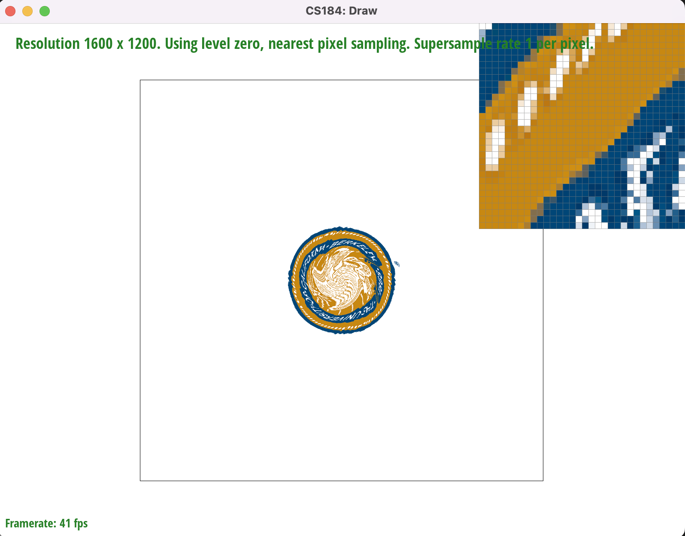
|
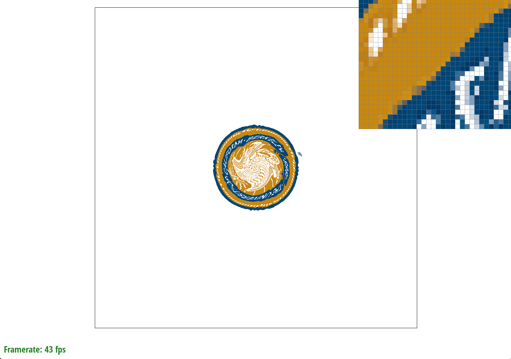
|
|
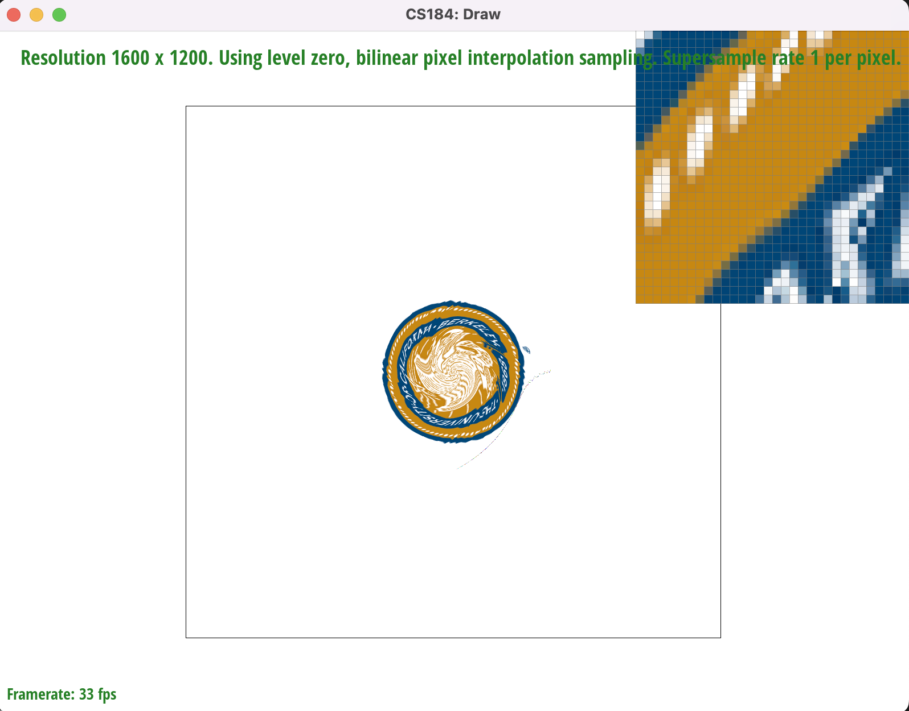
|
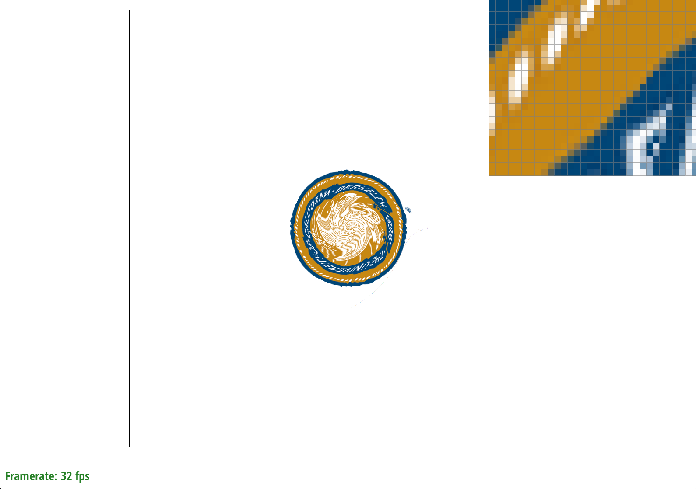
|
Nearest sampling tends to have more jaggies in contrast to bilinear sampling, which produces a smoother blur.
1 pixel supersampling has sharper distinctions between elements of an image since the color distinctions are sharper,
while 16 pixel supersampling tends to have more gradual changes between colors.
Level sampling enables sampling at different mipmap levels, where mipmaps are different resolutions of the same image. Mipmaps are particularly useful
when trying to store a number of resolutions within a finite amount of space; for an image that takes up space N, a mipmap with D levels takes only
4N/3 space.
We used level sampling for texture mapping by considering the three
variations of level sampling. For L_ZERO, we set the mipmap level to 0,
implying that we wanted to use the first, largest mipmap. For L_NEAREST,
we found the closest mipmap level by implementing the helper function
get_level(), which finds the difference vectors to eventually
calculate the mipmap level. For L_LINEAR, we calculated the floored
and ceil-ed mipmap levels and the pixel sampling for each of those
mipmaps, then linearly interpolated the pixel samples with each
other for the resulting image.
When considering L_ZERO, L_NEAREST, and L_LINEAR interpolation for level sampling, L_ZERO is the fastest, then L_NEAREST,
then L_LINEAR. L_LINEAR takes the most space, since it needs to compute the nearest or bilinear
samples for two mipmaps, then take the average.
L_LINEAR actually makes the image look a little grainy when using the psm setting
P_NEAREST, but blurs well when used with P_LINEAR; it seems that trilinear sampling
produces the best blur but takes the most memory. As a result, trilinear sampling
seems to work the best for antialiasing. Nearest level, bilinear interpolation also
produced a very smooth blur, perhaps even better than trilinear interpolation.
Different combinations of pixel and level sampling for sloth.png :
L_ZERO, P_NEAREST: jaggies, visible and unclear boundaries
L_ZERO, P_LINEAR: smoother edges (no jaggies), but sharp distinction between colors (not blurred)
L_NEAREST, P_NEAREST: like L_ZERO, P_NEAREST but with sharper distinctions between colors within shapes
L_NEAREST, P_LINEAR: very smooth blurring (resulting in a slightly fuzzy image), smooth edges (no jaggies)
|
|
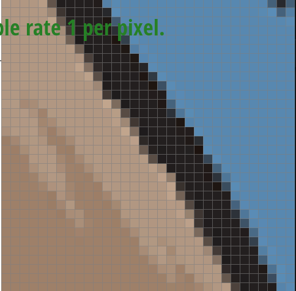
|
|
|
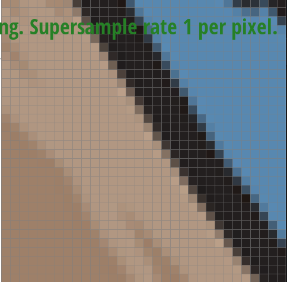
|
|
|
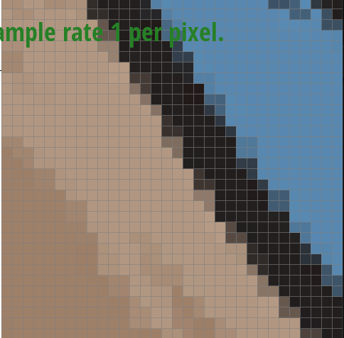
|
|
|
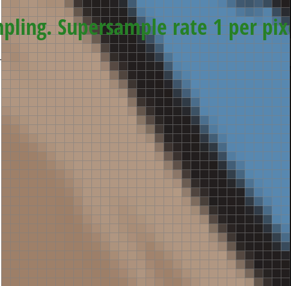
|
If you are not participating in the optional art competition, don't worry about this section!